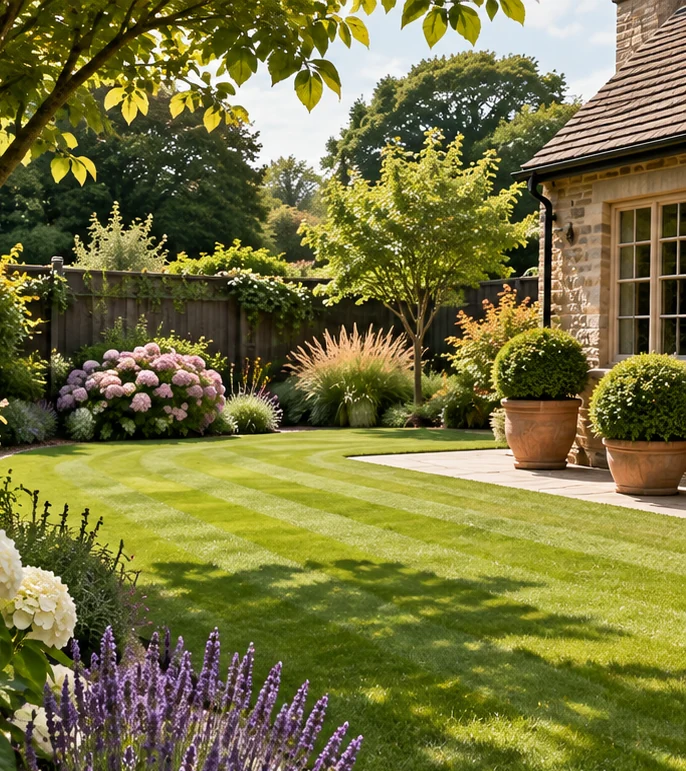
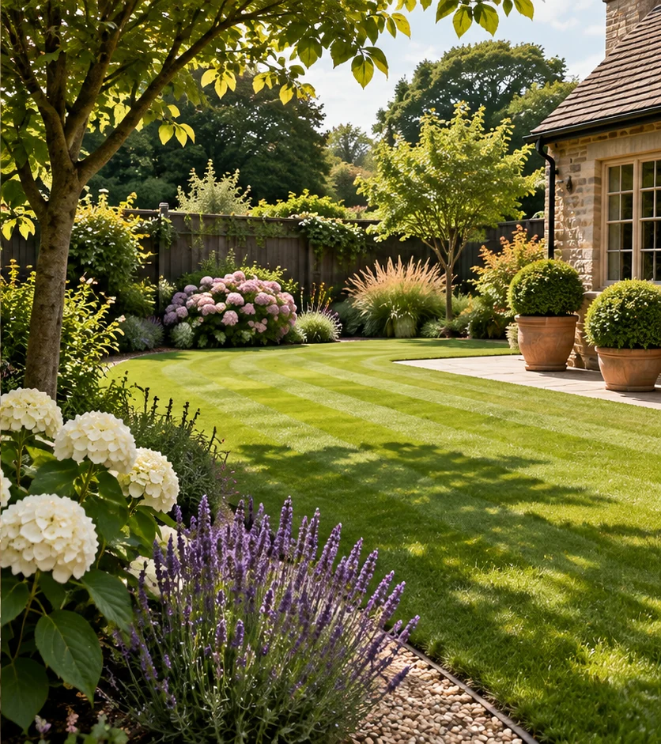

Garden Maintenance
Scheduled weekly or fortnightly care, plus one-off garden and grounds work.
Ask for a quote ↗Garden and grounds maintenance, specialist lawn care, fencing and compact tractor services across Nottinghamshire villages.

Services taken from the existing Unicorn Lawns & Landscapes website and arranged for quicker browsing.

Scheduled weekly or fortnightly care, plus one-off garden and grounds work.
Ask for a quote ↗Mowing, fertilising, moss and weed control, lawn improvement and renovation.
Explore lawn care ↗Fence repairs and replacements, flail mowing, vegetation control and ground preparation.
Get in touch ↗Unicorn Lawns & Landscapes is the Nottinghamshire division of ANP Services Spalding Ltd, which says it has traded in Lincolnshire since 2015 and expanded into Nottinghamshire in 2022.
Based in the Nottinghamshire countryside and serving nearby towns and villages within approximately 15 miles, including Sibthorpe, Long Bennington, Cotham, East Stoke and Syerston.
SibthorpeLong BenningtonCothamEast StokeSyerstonTell the team what you need and the location of your property. This preview uses the company's published contact information and does not collect messages itself.
Email for a Quote ↗Call 07745 247488